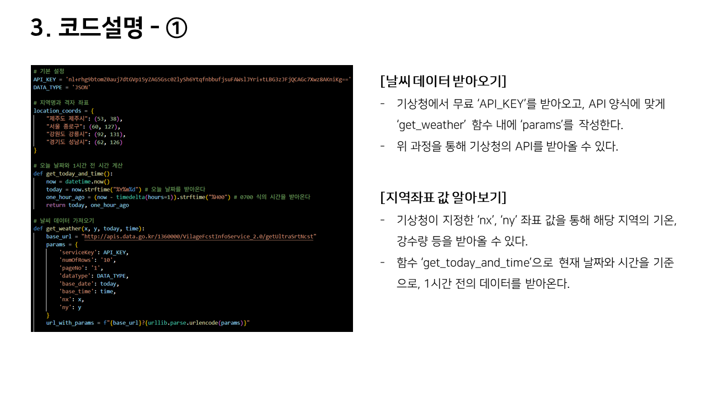

Work 01
Python Weather Program




기상청 API 기반 코드작업 '날씨 알리미'
지역명을 입력하면 현재 날씨를 알려주는 Python 프로그램
아이디어의 시작
기상청의 날씨 정보를 사용자가 간단히 확인할 수 있도록, 지역명을 입력하면 해당 지역의 온도와 강수 상태를 출력하는 프로그램을 기획했습니다.
구현 방식
기상청 Open API를 활용해 날짜와 시간, 지역 좌표값을 기준으로 데이터를 요청하고, 입력값에 따라 등록된 지역의 날씨 정보를 불러오도록 구성했습니다.
예외 처리
등록되지 않은 지역을 입력하면 오류 안내와 등록 지역 목록을 출력하고, '종료' 입력 시 프로그램이 자연스럽게 끝나도록 흐름을 설계했습니다.
구현 결과
강수량과 온도를 기준으로 눈, 눈+비, 비, 맑은 하늘 메시지를 구분하여 출력하는 콘솔형 날씨 알리미 프로그램을 완성했습니다.